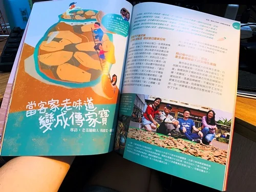
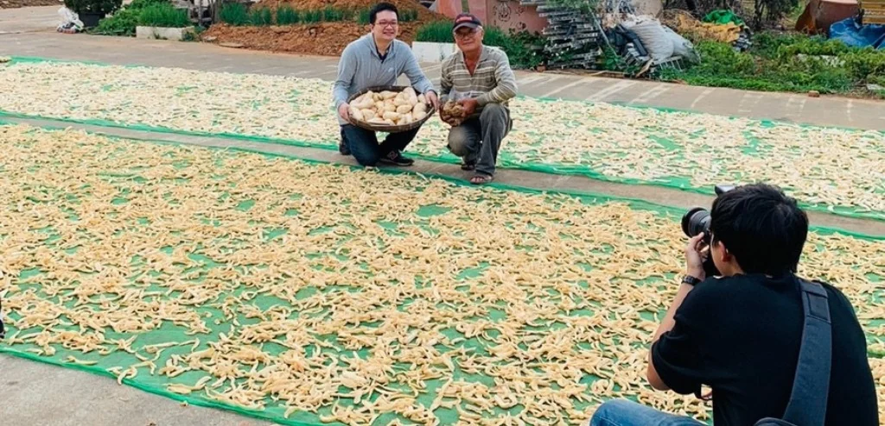
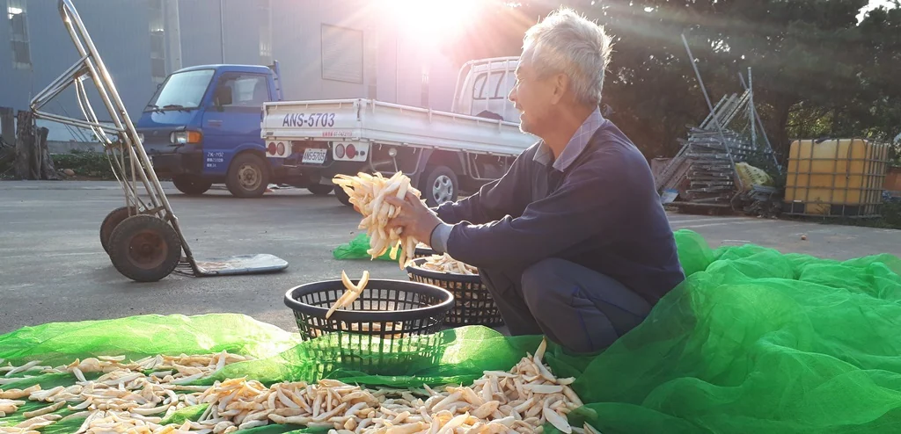

臺中市政府客家事務委員會｜《聽・看臺中客》第五期・2022
當客家老味道變成傳家寶
從客家飲食的角度，看一戶清水農家怎麼把手藝傳下來。對我們來說，傳家的是做菜脯的工夫，也是家人一起顧著一方曬埕的日子。
閱讀《聽・看臺中客》原刊（PDF）媒體報導
有人來看農家怎麼做黑菜脯，有人想知道年輕一代為什麼回家。謝謝留下文字、照片和影像的人，讓更多人看見菜脯埕一家人的日常。

菜脯埕媒體紀錄
臺中市政府客家事務委員會｜《聽・看臺中客》第五期・2022
從客家飲食的角度，看一戶清水農家怎麼把手藝傳下來。對我們來說，傳家的是做菜脯的工夫，也是家人一起顧著一方曬埕的日子。
閱讀《聽・看臺中客》原刊（PDF）

臺中市政府｜《臺中好生活》2018 年 12 月號
菜脯常在家常菜裡當配角。這篇報導從餐桌上的一口菜脯，回頭看看清水農家為這份滋味做了哪些工夫。
閱讀《臺中好生活》原刊（PDF）